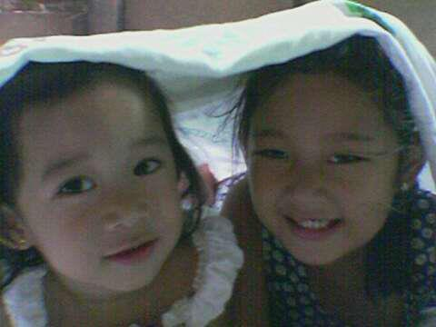
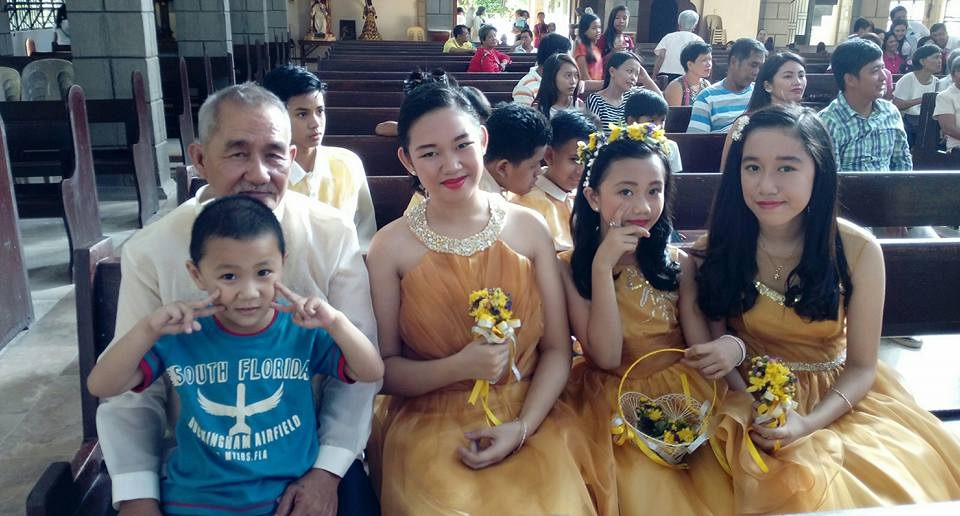
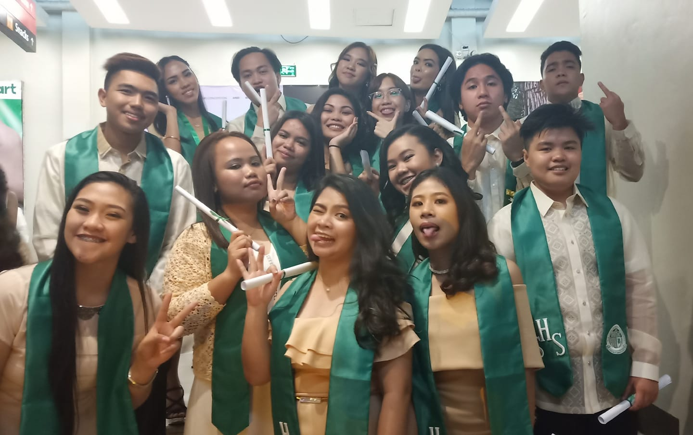
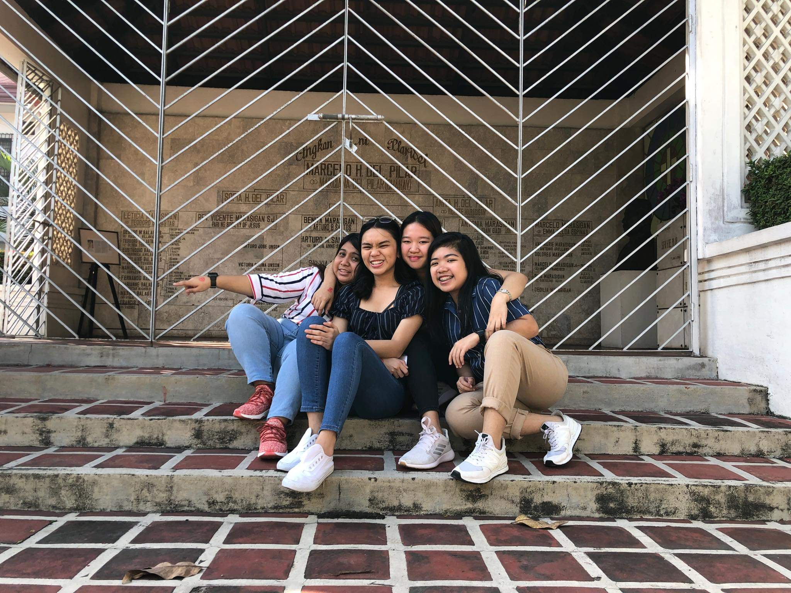
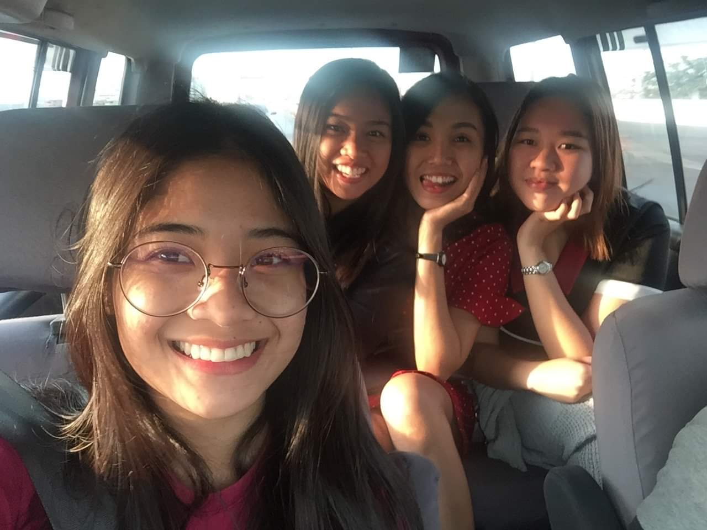

Summer will end soon enough, and childhood as well.
Back in the old days, me and my sister loves playing outside.1 We always make alternative toys using anything we found in our backyard.2I remembered playing luto-lutoan and bahay-bahayan with her.3 We we’re inseparable because we only have each other.4 We always argue about small things but in the end of the day we reconcile.5 Between the two of us she’s tougher than me.6 I always cry over small things.7 They said that I’m the soft hearted one compared to her.8 I’m super clingy, I love hugging people around and I’m super obsessed with cute stuffs.9 In the past, we had our first dog named Cute.10 She’s very fluffy and she looks like a white teddy bear.11  My grandfather said that the puppy followed him when he’s on his way to our home.12 No one claimed him that’s why we adopted the puppy and named him Cute.13 Cute became our sunshine.14 We love cuddling with her but sadly she died due to an accident.15 That incident made me realize that I can’t have the things or persons I love with me forever.16 They say that childhood is the light of our life and we must keep it safe within our hearts.17 I can say that I had an astonishing childhood.18 But like the summer, childhood ends soon without me noticing it.19 If I’ll be given a chance, I would love to become a child again to be able to feel free without worrying what might happen in the next coming days.20
It takes courage to grow up and become who you really are.
As I grow older, I had a lot of realization.1 My teenage year wasn't easy.2 This is the time where I became more insecure.3 I feel like expectations robbed my happiness.4 People always compare me with my sister and I hated it.5 I slowly lost interest in things and began living up to their expectations.6 I did my best to make my parents proud of me.7 But then I realized that I’m not happy with what I’m doing.8 Darker days come and I don’t know what to do anymore.9 One of my teacher in junior high school encouraged me to join in the cell group.10  At first I hesitated because I’m not a Christian and I don’t know what cell groups do but I still joined it.11 I think that it was a blessing in disguise to be a part of that cell group.12 The cell group made me surrender my worries and hatred.13 It served as a light for me to find who really I am.14 I had the courage to live not for others but live for myself.15 I slowly began to accept myself.16 I always make sure that every time I feel bad, I pray hard and do my best to be positive.17 It always takes courage to become who you really are.18 I thank God that he made me strong enough to be able to fight my own battle.19 Life’s really tough and I’m not even in the half of it yet but my experience made me who I am now and I want to continue to enjoy every moment of my life.20
Take it all one day at a time and enjoy the journey.
For me college is the scariest yet challenging part of my life.1 2  I remembered when I first entered in UE I feel lost and alone. I’m a shy type of person and I don’t talk too much.3 I thought that I will have a lonely college life but I was wrong.4 IT wasn’t really my choice that’s why I had a hard time back then.5 But because I met amazing people that became my cheerleader I was able to enjoy even if I’m having a hard time.6 Me and my friends doubted ourselves because we feel like we don’t belong here.7 But as time goes time we are somehow able to feel positive.8 We still have a lot of worries but as long as we’re together we do believe that we can make it.9 2  I was enjoying my first year days but then a pandemic happened.10 I felt sad and I really miss hanging out with my friends.11 Because of Covid-19 we are not able to enjoy our sophomore year.12 We have friends who weren’t able to enroll this school year.13 We won’t be able to fulfill our promise that we will all graduate on time and it makes me feel sad.14 How I wish Covid never happened.15 I always pray that this pandemic ends soon.16 We aren’t taking an easy path but it doesn’t end our journey here.17 We may feel tired but we will never give up.18 Soon, I do believe that we will achieve our dreams.19 I want to enjoy every moment I have because I’m not getting any younger anymore.20